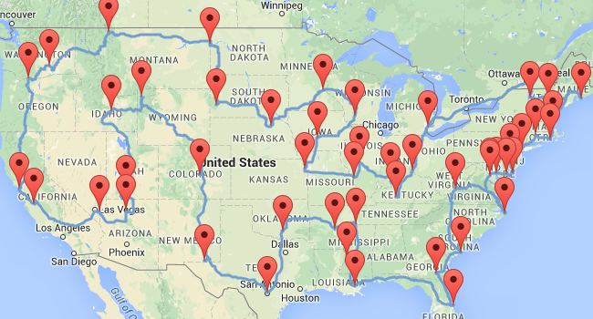
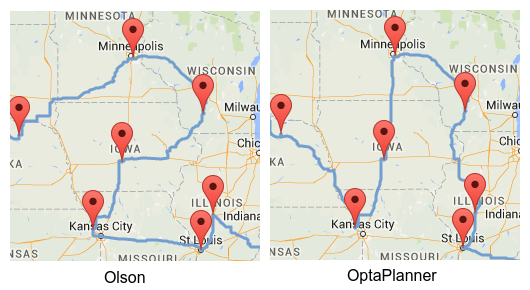
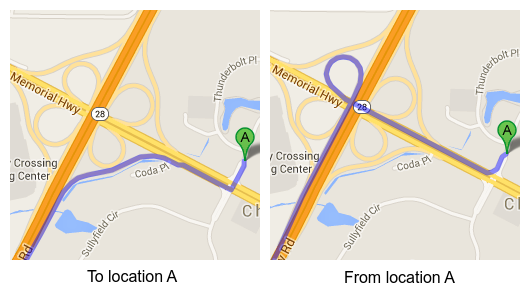
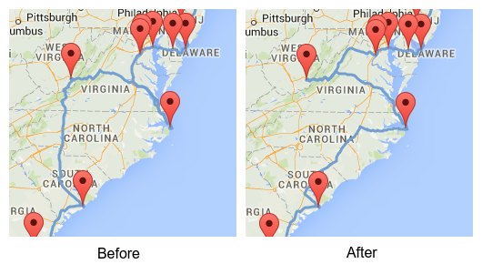
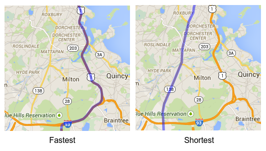

3 Bugs in The Ultimate American Road Trip of The Washington Post
Earlier this week, The Washington Post published an article about how
a data genius has computed the ultimate American road trip.
The only problem… it contains several mistakes! It’s not the optimal route, nor the shortest route, nor the fastest route.
Let’s take a look at the problems and how we can fix each of them.
The goal
The Ultimate American Road Trip stops at 50 national natural landmarks, national historic sites and national monuments in the US.
The goal is to find the fastest trip to visit all of these locations.
This is known as a Traveling Salesman Problem.
The original solution (Olson’s algorithm)
Here’s the original solution based on Randy Olson’s blog
shown with Google Maps:

Note that I had to recreate the datasets.
I’ve used exact latitude longitude coordinates (instead of location names) to avoid ambiguity and get more accurate routes.
The Washington Post even claims that the trip above is the fastest trip (Olson’s blog doesn’t make this claim), but it’s not:
Bug 1: Better optimization algorithms give better results
A few days ago, William J. Cook already proved with Concorde
that there’s a shortest and faster path near Iowa. With OptaPlanner I come to the same conclusion:

This reduces the total time by 1h 35m 40s and the total distance by 34km 515m.
Bug 2: Ghost driving (driving on the wrong side of the road) is illegal
Road distances are not symmetric. Driving from A to B is not the same as driving from B to A
(if you adhere to traffic rules, of course):

If we take this into account, the fastest path near Carolina changes:

On the left is the path found by both Olson and Cook (and by myself when using Olson’s symmetrical distances).
On the right is my path, which reduces the total time by another 49m 36s (if both paths are computed using asymmetric distances),
but increases the distance by 805m.
Bug 3: Google Maps does not return the shortest routes
Do we want the shortest or the fastest trip?
We used Google Maps to calculate the fastest route between every pair of locations.
So if we’re aiming for the fastest trip, that’s fine.
However, if we’re aiming for the shortest trip, then we should be asking Google Maps for the shortest routes,
which can be drastically different:

Contrary to popular belief, the shortest trip on the fastest routes is not the shortest trip.
Here’s my elaborate proof of that.
Most people tend to prefer highways over dirt roads, so they prefer prefer the fastest trip over the shortest trip.
In more advanced use cases, we would also want to take additional constraints into account:
Not all routes are equally beautiful or equally safe.
Consider optional places to visit, as long as they don’t impact the length of our trip too much.
Consider time constraints: to see that sunset at the ocean, we’ll need to arrive there before the evening.
That’s when a customizable solver such as OptaPlanner becomes really useful.
Conclusion
By using better algorithms and a more accurate model (without ghost driving), our trip is 2h 25m 16s faster:
| Dataset | Time | Total time gain | Distance | Total distance gain |
|---|---|---|---|---|
Olson (Clockwise) |
|
| ||
Iowa fix (Clockwise) |
|
|
|
|
Iowa and Carolina fix (Clockwise) |
|
|
|
|
| Dataset | Time | Total time gain | Distance | Total distance gain |
|---|---|---|---|---|
Olson (Counterclockwise) |
|
| ||
Iowa fix (Counterclockwise) |
|
|
|
|
Iowa and Carolina fix (Counterclockwise) |
|
|
|
|

{kind=link}